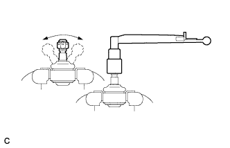
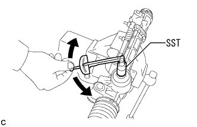

Steering Gear Assembly Inspection |
| 1. Tie Rod End Sub-assembly LH Inspection |
Secure the ball joint of the tie rod end LH in a vise using aluminum plates.
Install the castle nut to the stud bolt.
Turn the ball joint back and forth 5 times or more.
 |
Set a torque wrench on the nut, turn the ball joint continuously at a rate of 1 turn per 3-5 seconds, and check the turning torque on the 5 turn.
| 2. Tie Rod End Sub-assembly RH Inspection |
| 3. Inspect Total Preload |
 |
Using SST, inspect the total preload of the steering gear assembly.